| 項目 | 結果 |
|---|---|
| Task 1 Chamfer Distance（門檻 < 20） | 6.7868 |
| Task 2 最佳 FID（quad schedule + noise predictor） | 0.8252 |
SimpleNet（network.py）dims = [dim_in] + list(dim_hids) + [dim_out] # [2, 128, 128, 128, 2]
self.layers = nn.ModuleList([TimeLinear(dims[i], dims[i+1], num_timesteps)
for i in range(len(dims) - 1)])
self.act = nn.SiLU()
# forward
for i, layer in enumerate(self.layers):
x = layer(x, t)
if i < len(self.layers) - 1: # 輸出層不加 activation
x = self.act(x)
TimeLinear（2→128→128→128→2），輸入 $x_t$，輸出同維度的雜訊預測 $\epsilon_\theta(x_t,t)$。TimeLinear 會把 timestep $t$ 做 embedding 後乘在線性層的輸出上，讓每一層都知道目前的雜訊強度。因為每層都要額外吃 $t$，所以用 nn.ModuleList 自己跑迴圈，不能用 nn.Sequential。q_sample（forward process）由 $q(x_t|x_0)=\mathcal N\!\big(\sqrt{\bar\alpha_t}\,x_0,\,(1-\bar\alpha_t)I\big)$ 用 reparameterization 一步取樣： $$x_t=\sqrt{\bar\alpha_t}\,x_0+\sqrt{1-\bar\alpha_t}\,\epsilon,\qquad \epsilon\sim\mathcal N(0,I)$$
alphas_prod_t = extract(self.var_scheduler.alphas_cumprod, t, x0) # (B,1) xt = alphas_prod_t.sqrt() * x0 + (1 - alphas_prod_t).sqrt() * noise
extract 會依每筆資料各自的 $t$ 取出 $\bar\alpha_t$，並 reshape 成 (B,1)，和 (B,2) 的 $x_0$ broadcasting 相乘。因為有這條閉式解，訓練時不需要真的迭代 $t$ 步。
p_sample（reverse 一步 $x_t\to x_{t-1}$）DDPM Eq. 11： $$\mu_\theta(x_t,t)=\frac{1}{\sqrt{\alpha_t}}\Big(x_t-\frac{\beta_t}{\sqrt{1-\bar\alpha_t}}\epsilon_\theta(x_t,t)\Big),\quad \tilde\beta_t=\frac{1-\bar\alpha_{t-1}}{1-\bar\alpha_t}\beta_t,\quad x_{t-1}=\mu_\theta+\sqrt{\tilde\beta_t}\,z$$
eps_theta = self.network(xt, t) # 1. 預測雜訊 mean = (xt - eps_factor * eps_theta) / alpha_t.sqrt() # 2. posterior mean var = (1 - alpha_bar_t_prev) / (1 - alpha_bar_t) * beta_t # 3. posterior variance z = torch.randn_like(xt) nonzero_mask = (t != 0).float().view(-1, *([1] * (xt.dim() - 1))) x_t_prev = mean + nonzero_mask * var.sqrt() * z # 4. t=0 不加雜訊
eps_factor $=\frac{1-\alpha_t}{\sqrt{1-\bar\alpha_t}}=\frac{\beta_t}{\sqrt{1-\bar\alpha_t}}$，就是 Eq. 11 裡 $\epsilon_\theta$ 前的係數。nonzero_mask：最後一步 $t=0$ 直接輸出 mean，不再加隨機雜訊，得到乾淨的 $x_0$。p_sample_loop（DDPM Algorithm 2）xt = torch.randn(shape).to(self.device) # x_T ~ N(0, I)
for t in range(self.var_scheduler.num_train_timesteps - 1, -1, -1): # 999 → 0
xt = self.p_sample(xt, t)
x0_pred = xt
從標準常態分佈出發，連續呼叫 p_sample 做 1000 次去噪，最後得到的就是生成樣本。
compute_loss（DDPM Eq. 14，simple loss）$$L_{\text{simple}}=\mathbb E_{t,x_0,\epsilon}\big\|\epsilon-\epsilon_\theta(\sqrt{\bar\alpha_t}x_0+\sqrt{1-\bar\alpha_t}\epsilon,\ t)\big\|^2$$
t = torch.randint(0, num_train_timesteps, size=(batch_size,)) # 1. 均勻抽 t eps = torch.randn_like(x0) # 2. 真正加進去的雜訊 x_t = self.q_sample(x0, t, noise=eps) eps_pred = self.network(x_t, t) # 3. 網路預測雜訊 loss = F.mse_loss(eps_pred, eps) # 4. MSE
每個 batch 對每筆資料獨立抽一個 $t$，所以一個 batch 同時訓練到各種雜訊強度。網路的目標是從 $x_t$ 還原出當初加進去的 $\epsilon$。
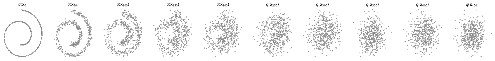
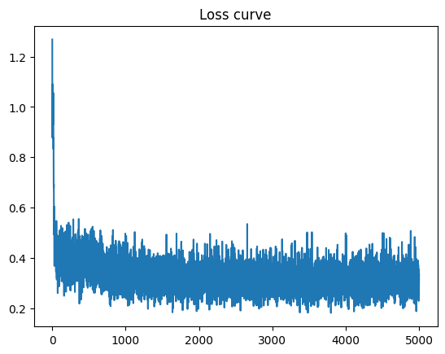
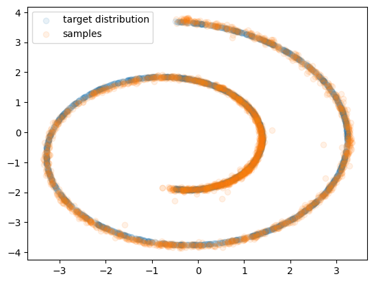
生成的點幾乎完整覆蓋整條螺旋，只有少量點落在螺旋外。simple loss 的最小值不是 0：同一個 $x_t$ 可能來自不同的 $(x_0,\epsilon)$ 組合，所以 $\epsilon$ 本身無法被完全確定，loss 收斂到一個非零的平台是正常的。
add_noise（scheduler.py）alpha_bar_t = extract(self.alphas_cumprod, t, x_0) # [B,1,1,1] x_t = alpha_bar_t.sqrt() * x_0 + (1 - alpha_bar_t).sqrt() * eps
和 Task 1 的 q_sample 是同一條公式 $x_t=\sqrt{\bar\alpha_t}x_0+\sqrt{1-\bar\alpha_t}\epsilon$，只是資料變成 [B,C,H,W] 的影像，extract 會 reshape 成 [B,1,1,1] 做 broadcasting。函式同時回傳 eps，讓 loss 可以拿它當 ground truth。
$$f(t)=\cos^2\!\Big(\frac{t/T+s}{1+s}\cdot\frac{\pi}{2}\Big),\quad \bar\alpha_t=\frac{f(t)}{f(0)},\quad \beta_t=\min\!\Big(1-\frac{\bar\alpha_t}{\bar\alpha_{t-1}},\ 0.999\Big),\quad s=0.008$$
s = 0.008 steps = torch.arange(num_train_timesteps + 1, dtype=torch.float64) # t = 0..T f = torch.cos(((steps / num_train_timesteps) + s) / (1 + s) * torch.pi / 2) ** 2 alphas_cumprod = f / f[0] # ᾱ_0 = 1 betas = 1 - alphas_cumprod[1:] / alphas_cumprod[:-1] # T 個 β betas = betas.clamp(max=0.999).float()
steps 取 0..T。三種參數化最後都要算出 posterior $q(x_{t-1}|x_t,x_0)=\mathcal N(\tilde\mu_t,\tilde\beta_tI)$（DDPM Eq. 7）： $$\tilde\mu_t(x_t,x_0)=\frac{\sqrt{\bar\alpha_{t-1}}\beta_t}{1-\bar\alpha_t}x_0+\frac{\sqrt{\alpha_t}(1-\bar\alpha_{t-1})}{1-\bar\alpha_t}x_t,\qquad \tilde\beta_t=\frac{1-\bar\alpha_{t-1}}{1-\bar\alpha_t}\beta_t$$ 差別只在網路輸出的是哪一個量，所以我把共用的部分抽成 helper：
def _alpha_bar_prev(self, t, x_t): # ᾱ_{t-1}，t = 0 時定義為 1
prev = extract(self.alphas_cumprod, (t - 1).clamp(min=0), x_t)
return torch.where((t == 0).view(prev.shape), torch.ones_like(prev), prev)
def _posterior_mean(self, x_t, t, x0_pred): # μ̃_t
return (ab_prev.sqrt() * beta_t / (1 - ab_t) * x0_pred
+ alpha_t.sqrt() * (1 - ab_prev) / (1 - ab_t) * x_t)
def _posterior_variance(self, x_t, t): # β̃_t
return (1 - ab_prev) / (1 - ab_t) * beta_t
def _add_posterior_noise(self, mean, var, t): # t = 0 不加雜訊
z = torch.randn_like(mean)
nonzero_mask = (t != 0).float().view(-1, *([1] * (mean.dim() - 1)))
return mean + nonzero_mask * var.sqrt() * z
def _posterior_sample(self, x_t, t, x0_pred):
x0_pred = x0_pred.clamp(-1, 1)
return self._add_posterior_noise(self._posterior_mean(x_t, t, x0_pred),
self._posterior_variance(x_t, t), t)
_posterior_sample。
x0_pred = (x_t - (1 - alpha_bar_t).sqrt() * eps_theta) / alpha_bar_t.sqrt() sample_prev = self._posterior_sample(x_t, t, x0_pred)
self._posterior_sample(x_t, t, x0_pred)。_add_posterior_noise(mean_theta, _posterior_variance(x_t, t), t)。clamp(-1,1)：訓練影像被 normalize 到 $[-1,1]$，$\hat x_0$ 超出範圍一定是錯的，強制拉回可以避免誤差在 1000 步裡累積放大。step() 會先把 $t$ 統一轉成 device 上的 1-D tensor，再依 predictor 字串分派到上面三個函式。model.py）| predictor | 網路輸出 | regression target |
|---|---|---|
| noise（已提供） | $\hat\epsilon_\theta(x_t,t)$ | $\epsilon$ |
| x0 | $\hat x_\theta(x_t,t)$ | $x_0$ |
| mean | $\mu_\theta(x_t,t)$ | $\tilde\mu_t=\frac{1}{\sqrt{\alpha_t}}\big(x_t-\frac{\beta_t}{\sqrt{1-\bar\alpha_t}}\epsilon\big)$ |
def get_loss_x0(self, x0, class_label=None, noise=None):
t = self.var_scheduler.uniform_sample_t(B, x0.device)
x_t, _ = self.var_scheduler.add_noise(x0, t, eps=noise)
x0_pred = self.network(x_t, t)
return F.mse_loss(x0_pred, x0)
def get_loss_mean(self, x0, class_label=None, noise=None):
t = self.var_scheduler.uniform_sample_t(B, x0.device)
x_t, eps = self.var_scheduler.add_noise(x0, t, eps=noise)
mean_pred = self.network(x_t, t)
mean_true = (x_t - beta_t / (1 - alpha_bar_t).sqrt() * eps) / alpha_t.sqrt()
return F.mse_loss(mean_pred, mean_true)
mean predictor 的 target 用的是閉式 $\tilde\mu_t(x_t,x_0)$。把 $x_0=\frac{x_t-\sqrt{1-\bar\alpha_t}\epsilon}{\sqrt{\bar\alpha_t}}$ 代入 Eq. 7 化簡，就得到上面只含 $x_t$ 與 $\epsilon$ 的形式（DDPM Eq. 10），和 Eq. 7 數學上完全相等，而且直接用真正加入的 $\epsilon$，不需要再算一次 $x_0$。
正確性驗證：pytest tests/test_todo.py 共 28 passed，數值與助教提供的參考輸出一致。
| 參數 | 值 | 參數 | 值 |
|---|---|---|---|
| train_num_steps | 100,000 | batch_size | 16 |
| $T$ | 1000 | $\beta_1,\ \beta_T$（linear / quad） | 1e-4, 0.02 |
| resolution | 64×64 | warmup_steps | 200 |
| sampler | DDPM（1000 steps） | FID 樣本數 | 500 張 vs. AFHQ val（eval set） |
共訓練 5 組模型：{linear, quad, cosine} × noise predictor，以及 linear × {x0, mean} predictor。
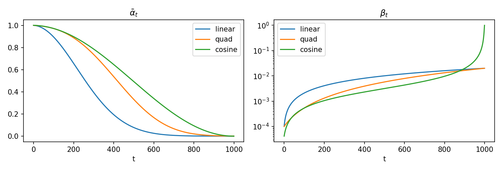
| schedule | $\bar\alpha_{500}$ | $\bar\alpha_T$ |
|---|---|---|
| linear | 0.079 | 4.0e-5 |
| quad | 0.333 | 7.3e-4 |
| cosine | 0.494 | 2.4e-9 |
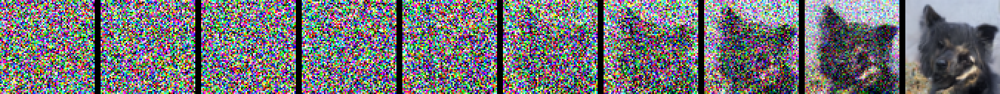
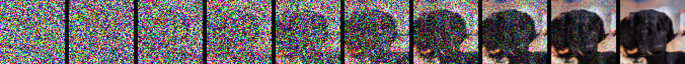
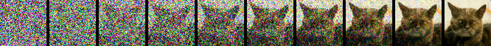
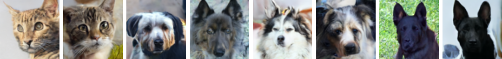
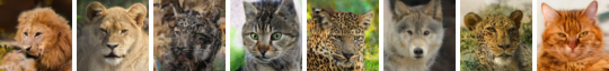
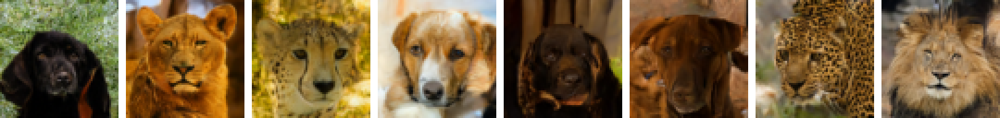
| schedule（noise predictor） | FID ↓ |
|---|---|
| linear | 14.3071 |
| quad | 0.8252 |
| cosine | 6.6765 |
觀察與討論：
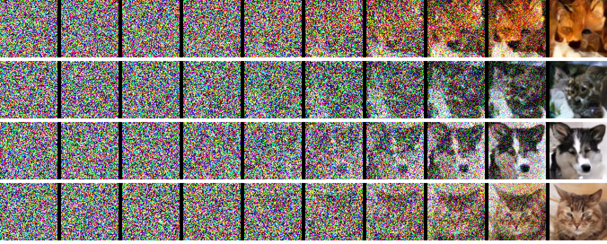
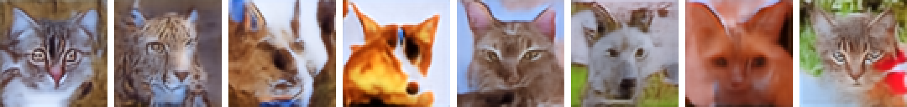
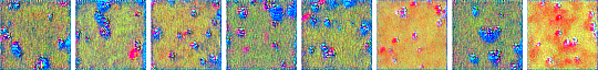
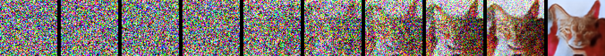
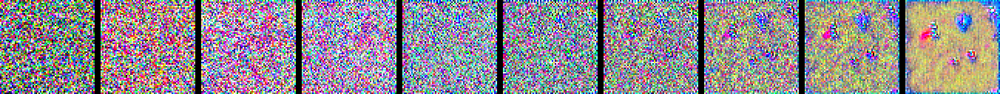
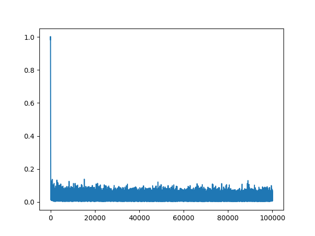
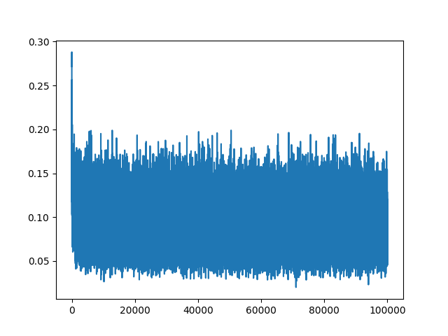
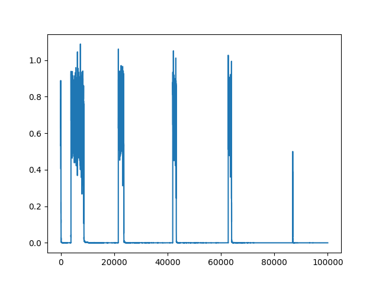
| predictor（linear schedule） | FID ↓ |
|---|---|
| noise | 14.3071 |
| x0 | 13.8030 |
| mean | 49.4326 |
觀察與討論：
clamp(-1,1)，錯誤能逐步被修正，最終品質仍然不錯。
最佳結果為 quad schedule + noise predictor，FID = 0.8252（< 15）。
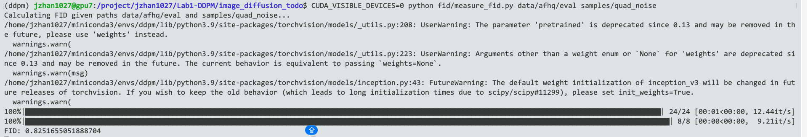
python fid/measure_fid.py data/afhq/eval samples/quad_noise）。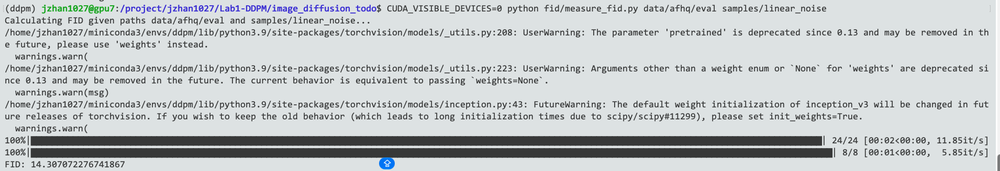
比對 eval set（AFHQ val 經 dataset.py 轉成 64×64，約 1500 張，對應 24 個 batch）與 500 張生成影像（8 個 batch）。FID 使用助教提供、在 AFHQ 上 fine-tune 過的 Inception-v3 特徵。